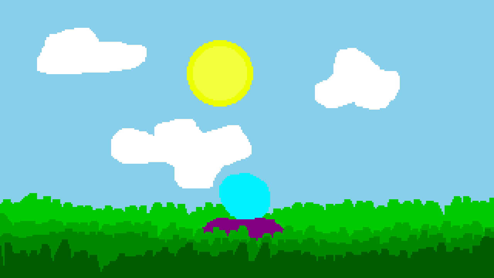

Hello everyone.

Wow, cover art for Episode 1.
Episode 1 is releasing on December 18th, 2026. I know, that's a few months away still, and I'll explain a little later as to why.
Episode 1 focuses on the set up. It's setting up characters and setting up the ground for Episode 2 to really run and take off. It's meant to be fun, and based on what I've been told, it is very fun.
Now... WHY IS IT TAKING SO LONG???
So, Episode 2 is an episode I would like to get a head start on. Episode one takes about an hour and a half to complete if you really take your time with it, and episode 2 is looking like it's going to be a little longer. It's going to feature new mechanics that need to be locked down before I start main development. As well, I have been working on Cosmic Story since before Savior was finished. I haven't stopped since December, and I would quite like a break. So, for a couple of weeks, I'm going to take a short break.
If the game was faster to work on, I'd release Episode 1 tomorrow, but I just can't do that yet. That said, I don't have a release date for episode two yet, so if it's finished quickly, I'll release it right when it's complete, as Episode 3 builds on Episode 2.
Anyway, that is all. I'll release another article after the Episode releases.